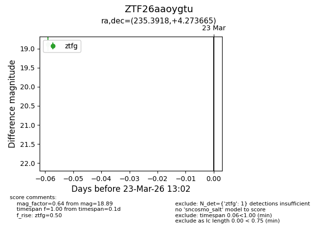
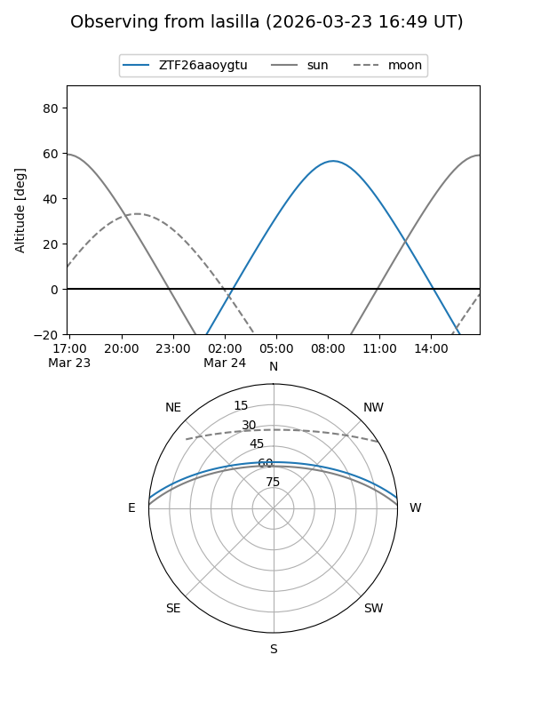
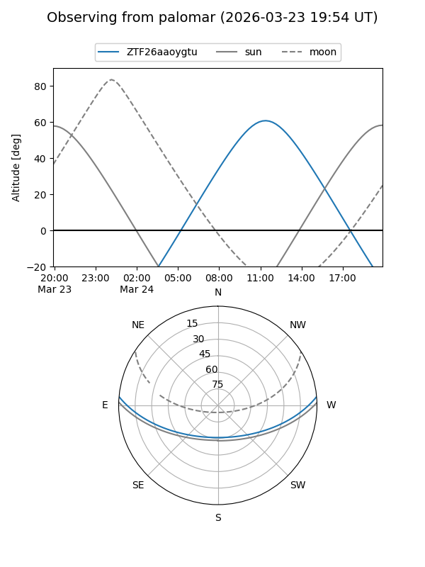

ZTF26aaoygtu
Target ZTF26aaoygtu at 2026-03-23 13:04
Aliases and brokers:
FINK: link
Lasair: link
ALeRCE: link
alt names
ZTF26aaoygtu (ztf,fink_ztf)
Coordinates:
equatorial (ra, dec) = 235.3918,+4.27367
equatorial (HMS+DMS) = 15:41:34.03,+04:16:25.20
galactic (l, b) = (11.1961,+43.47085)
Flags:
Photometry:
last ztfg=18.89
1 ztfg detections
Lightcurve

Visibility


Additional plots